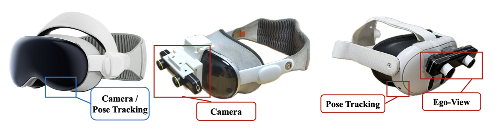
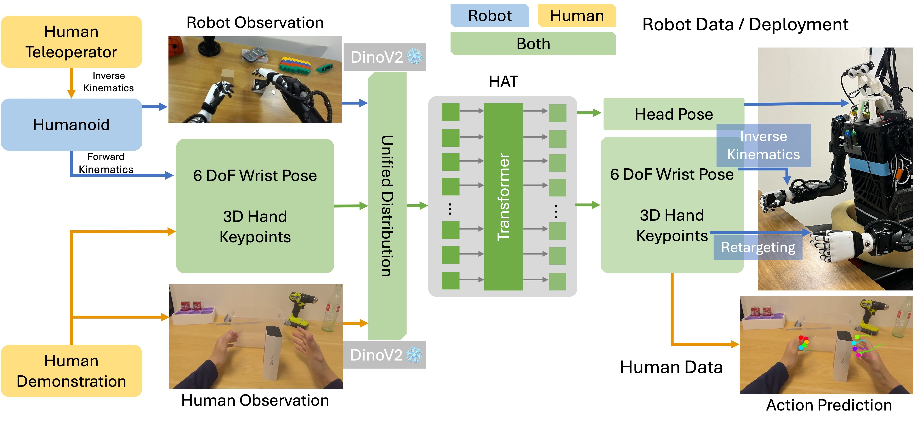

Humanoid (adj.): having human form or characteristics. — Merriam-Webster, 2025.
Abstract
Training manipulation policies for humanoid robots with diverse data enhance their robustness and generalization across tasks and platforms. However, learning solely from robot demonstrations is labor-intensive, requiring expensive tele-operated data collection which is difficult to scale. This paper investigates a more scalable data source, egocentric human demonstrations, to serve as cross-embodiment training data for robot learning. We mitigate the embodiment gap between humanoids and humans from both the data and modeling perspectives. We collect an egocentric task-oriented dataset (PH2D) that is directly aligned with humanoid manipulation demonstrations. We then train a human-humanoid behavior policy, which we term Human Action Transformer (HAT). The state-action space of HAT is unified for both humans and humanoid robots and can be differentiably retargeted to robot actions. Co-trained with smaller-scale robot data, HAT directly models humanoid robots and humans as different embodiments without additional supervision. We show that human data improves both generalization and robustness of HAT with significantly better data collection efficiency.
Collecting Human and Humanoid Demonstrations
We developed Vision OS App and OpenTV to collect data with 3D hand gestures and diverse cameras.
Scalable: we collected ~27k demonstrations with language annotations in dozens of hours.
With diverse demonstrations, HAT performs human-humanoid co-training without additional visual post-processing.
(Visualizations are slightly not synchronized due to plotly frontend)
(Visualizations are slightly not synchronized due to plotly frontend)
Pick up a straw in a milk tea shop
Pour water in front of a drink vending machine
Pack a bottle of beer in a hallway
Pour green tea in a sushi restaurant
Picking up an orange in front of an outdoor grill
Grasp and place a metal bottle in a university office
Unified Human-Centric State-Action Space
Our policy is agnostic of robots with a human-centric state-action representation, which can be retargeted to robots.
Robot Observations
Human Observations
Human-Humanoid Co-training Improves Generalizabilty
Few-shot Cross-Humanoid Generalization (CMU H1)
20 CMU demos
Co-trained with human data
Object Generalization (UCSD H1)
Seen in robot data: blue pepsi bottle
Seen in human data: red coke can
Seen in human data: ZED camera box
Seen in human data: cardboard box
Object Placement Generalization (UCSD H1)
Baseline: Trained on 60 robot demos (50 picking right, 10 picking left)
Ours: co-trained with human data with diverse placements
Background Generalization (UCSD H1)
Seen in robot data: colored paper background
Seen in human data: red cardboard
Seen in human data: wooden table
Seen in human data: green cardboard
We open-source code to replay human/humanoid recordings in Mujoco to demonstrate human-centric representation.
BibTeX
@article{qiu2025-humanpolicy,
title={Humanoid Policy \~{} Human Policy},
author={Ri-Zhao Qiu and Shiqi Yang and Xuxin Cheng and Chaitanya Chawla and Jialong Li and Tairan He and Ge Yan and David J. Yoon and Ryan Hoque and Lars Paulsen and Ge Yang and Jian Zhang and Sha Yi and Guanya Shi and Xiaolong Wang},
journal={arXiv preprint arXiv:2503.13441},
year={2025}
}